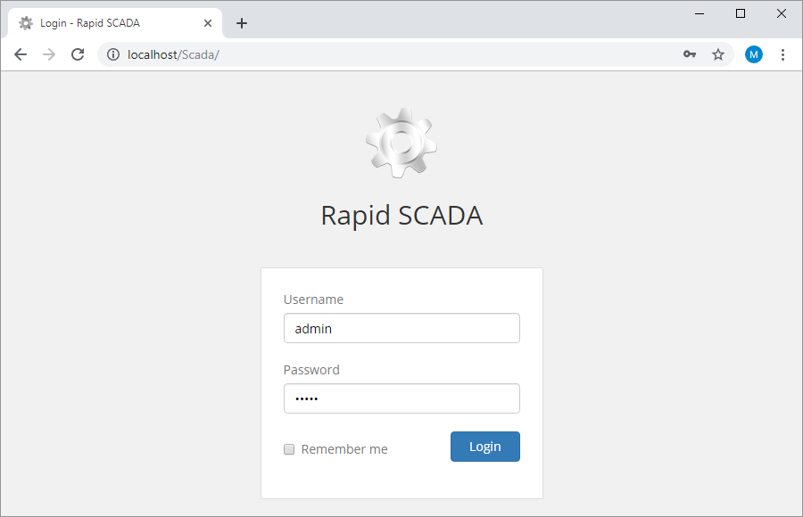

button.
button.After installing Rapid SCADA, it is recommended to restart the computer so that the Server, Communicator and Agent services start automatically. After the reboot is complete, run one of the following browsers: Google Chrome, Mozilla Firefox or Microsoft Edge. In the address bar, type http://localhost/scada/. The login page should open (see Figure 1). Enter admin and 12345 in the login and password fields and click the Login button.

Figure 1. Login web form
To start the Administrator application, use the shortcut located in the menu Start > Programs > SCADA . If the shortcut is missing for any reason, Administrator can be run from the executable file C:\SCADA\ScadaAdmin\ScadaAdmin.exe
The Administrator application includes the tools for managing other Rapid SCADA applications.
The Server, Communicator and Agent applications work as services. In case of working on Windows, use the services.msc snap-in to manage services. It can be run from the command line or by Control Panel > System and Security > Administrative Tools > Services. Service names: ScadaServerService, ScadaCommService and ScadaAgentService.
In addition, there are the svc_start.bat and svc_stop.bat files in the directories of the corresponding applications, which allow to start and stop the services. These batch files must be run as administrator.
The Administrator application also ables to start and stop Server and Communicator. To manage the services in Administrator, open a project and then open the instance status form (see Figure 2) using the button.

Figure. 2. Instance status in Administrator
The default startup type of the Server, Communicator and Agent services is Automatic, i.e. the services start when an operating system starts, and the services stop when the OS stops. If auto start is not necessary, Manual startup type could be set (see Figure 3).

Figure 3. Setting Windows service startup type
To open the web application named Webstation, in the browser address bar, enter http://compname/scada/ where compname is the host name or IP address of the computer with the installed web application, scada is the virtual directory specified during the installation. If Webstation is opened on the same computer on which it is installed, it is possible to use http://localhost/scada/ or http://127.0.0.1/scada/
The default username: admin
The default password: 12345